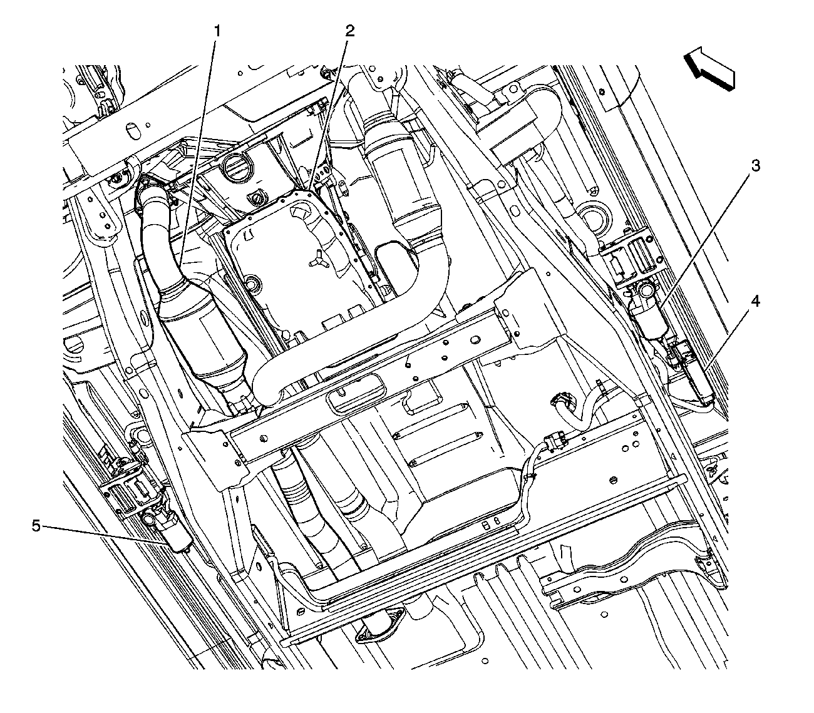

Operation CHARM
: Car repair manuals for everyone.
Home
>>
Cadillac
>>
2007
>>
Escalade ESV AWD V8-6.2L
>>
Repair and Diagnosis
>>
Body and Frame
>>
Auxiliary Step / Running Board
>>
Locations
>>
Retractable Running Board Components (Brs)
Retractable Running Board Components (Brs)
Retractable Running Board Components (BRS)

(1)Front Exhaust
(2)Transmission
(3)Running Board- Right
(4)Assist Step Control Module
(5)Running Board- Left